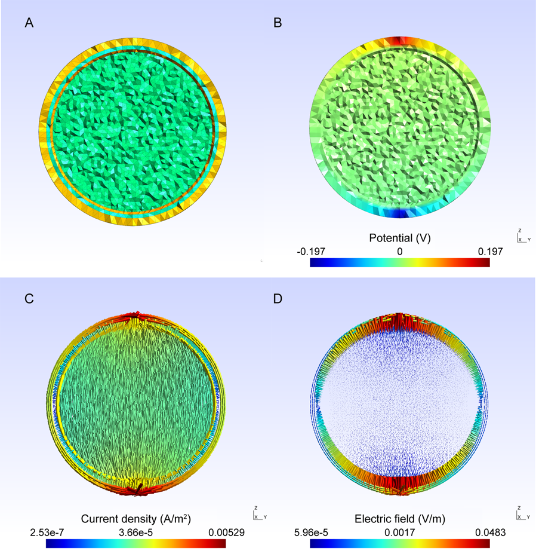
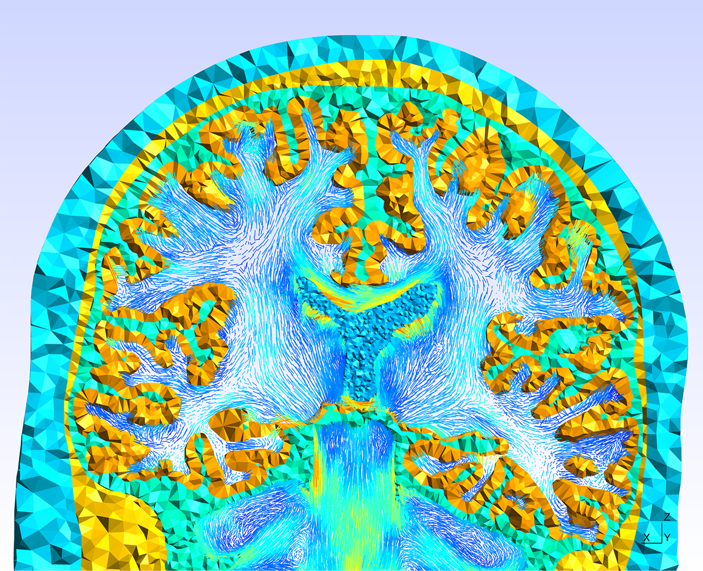

Overview
This project aims to simplify the preparation of accurate electromagnetic head models for EEG forward modeling.
It builds off of the seminal SimNIBS tool for electromagnetic field modelling of transcranial magnetic stimulation (TMS) and transcranial direct current stimulation. Human skin, skull, cerebrospinal fluid, and brain meshing pipelines have been rewritten with Nipype to ease access parallel processing and to allow users to start/stop the workflows. Conductivity tensor mapping from diffusion-weighted imaging is also included.
At present these pipelines depend on interfaces for Gmsh and Meshfix that can only currently be found in the enh/conductivity branch of the fork at Nipype.
Citation
A paper describing the tool has been accepted for publication in NeuroImage:
"A finite-element reciprocity solution for EEG forward modeling with realistic individual head models."
E. Ziegler, S.L. Chellappa, G. Gaggioni, J.Q.M. Ly, G. Vandewalle, E. André, C. Geuzaine, C. Phillips, NeuroImage. Volume 103, December 2014, Pages 542-551, ISSN 1053-8119, http://dx.doi.org/10.1016/j.neuroimage.2014.08.056.
Screenshots
Spherical electrostatic simulation
Leadfield accuracy comparable with OpenMEEG and SimBio
Whole head meshing
Whole head electrostatic simulation
White matter conductivity mapping
Install
To install the package, run:
python setup.py install
Set environment variable FWD_DIR to the root path of the installation directory by placing
export FWD_DIR=/path/to/forward
in your .bashrc or .zshrc file.
References
The citations for these tools are:
SimNIBS: Simulation of Non-invasive Brain Stimulation
Windhoff, M., Opitz, A. and Thielscher, A. (2011), Electric field calculations in brain stimulation based on finite elements: An optimized processing pipeline for the generation and usage of accurate individual head models. Human Brain Mapping
Gmsh: a three-dimensional finite element mesh generator with built-in pre- and post-processing facilities
C. Geuzaine and J.-F. Remacle. Gmsh: a three-dimensional finite element mesh generator with built-in pre- and post-processing facilities. International Journal for Numerical Methods in Engineering 79(11), pp. 1309-1331, 2009
GetDP: a General Environment for the Treatment of Discrete Problems
C. Geuzaine and J.-F. Remacle. Gmsh: a three-dimensional finite element mesh generator with built-in pre- and post-processing facilities. International Journal for Numerical Methods in Engineering 79(11), pp. 1309-1331, 2009
Meshfix
M. Attene - A lightweight approach to repairing digitized polygon meshes. The Visual Computer, 2010. (c) Springer.
Nipype: Neuroimaging in Python - Pipelines and Interfaces
Gorgolewski K, Burns CD, Madison C, Clark D, Halchenko YO, Waskom ML, Ghosh SS. (2011). Nipype: a flexible, lightweight and extensible neuroimaging data processing framework in Python. Front. Neuroimform. 5:13.